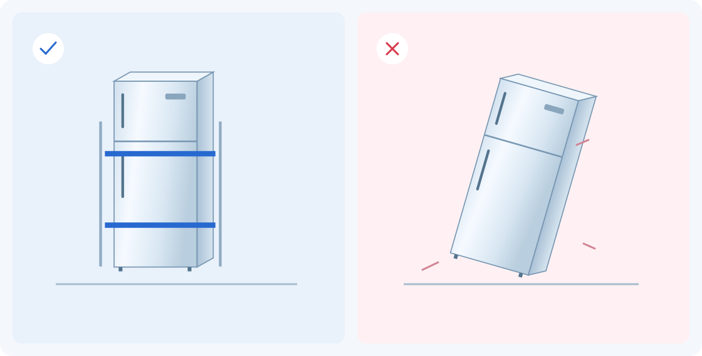

До приезда машины
Подготовьте не только холодильник, но и маршрут.
Основные решения лучше принять заранее: как вынести прибор, где он будет стоять в кузове и чем его закрепят.
Освободите и отключите
Уберите продукты, отключите питание и разморозьте прибор, если это требуется. Соберите воду и высушите внутренние поверхности. Подготовку лучше закончить до приезда машины.
Защитите подвижные детали
Полки, ящики и другие съёмные элементы упакуйте отдельно либо закрепите по инструкции. Двери не должны открываться в пути. Не используйте ручку как опору для переноски.
Проверьте весь маршрут
Измерьте прибор, двери, лифт и узкие повороты. Сообщите перевозчику этаж, наличие лифта и размеры холодильника. Грузовой отсек должен подходить не только по объёму, но и по высоте.
Подготовьте упаковку и крепление
Защитите поверхности и углы. Согласуйте подходящую тележку, мягкую прокладку и фиксацию в кузове. Упаковка защищает от царапин, но сама по себе не удерживает груз.
Положение и крепление
Стоя — предпочтительно.
Без фиксации — рискованно.
Высокий кузов помогает сохранить вертикальное положение. Однако устойчивость обеспечивают крепления: холодильник не должен свободно смещаться при торможении и поворотах.

Подходящая высота кузова, защита корпуса и фиксация груза.
Груз может сместиться. Ни плёнка, ни коробка не заменяют крепления.
Схема условная: способ крепления подбирают под прибор и транспорт. Скачать схему SVG

Разберите свою ситуацию
А если стоя не помещается?
Не выбирайте положение наугад. У разных моделей ограничения отличаются. Самый короткий путь — найти руководство по точной модели и согласовать способ перевозки.
Выберите вертикальную перевозку
Проверьте высоту кузова и возможность надёжного крепления. После доставки соблюдайте порядок установки и включения из руководства.
После доставки
Не спешите подключать питание.
Поставьте холодильник в рабочее положение, осмотрите корпус и дайте ему отстояться столько, сколько требует производитель. Затем выполняйте порядок установки из руководства.
Одна универсальная цифра здесь вводит в заблуждение: рекомендации зависят от модели и того, как прибор перевозили. Не переносите время ожидания из чужой инструкции на свой холодильник.
Сохраните перед переездом
Пять проверок перед выездом.
Ответы на частые ситуации.
На что опирается пример
Whirlpool · подготовка и перевозкаLG · положение и включениеBosch · переезд холодильникаМатериал для проверки дизайна. Общие рекомендации производителей проверены 2 ноября 2026 года; перед публикацией потребуется полноценная редакционная и SEO-проверка. Инструкция к конкретному прибору имеет приоритет. Иллюстрации — схемы редакции, без привязки к модели.